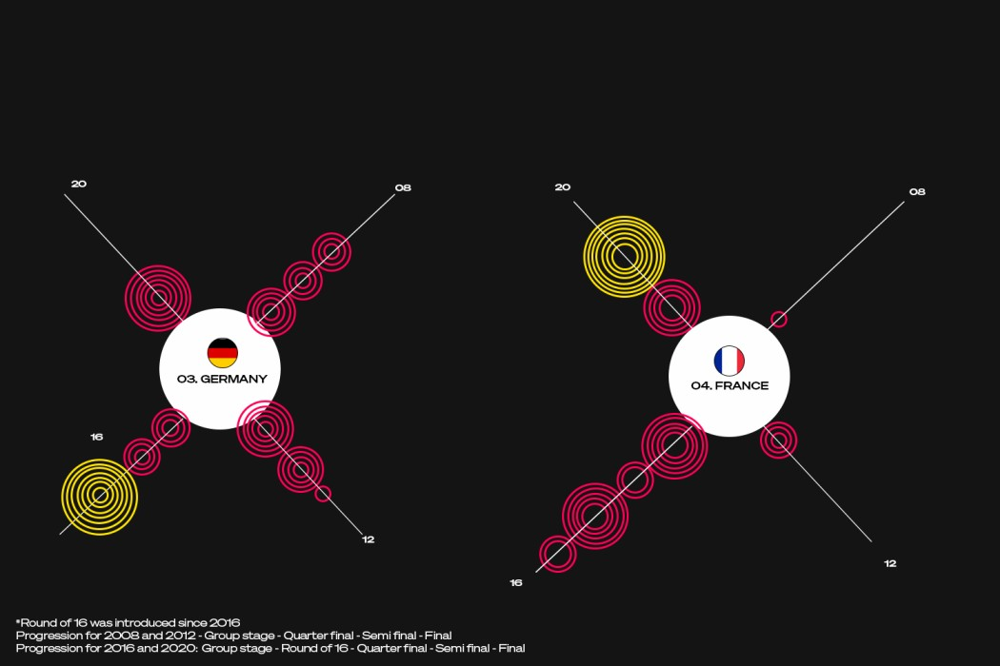
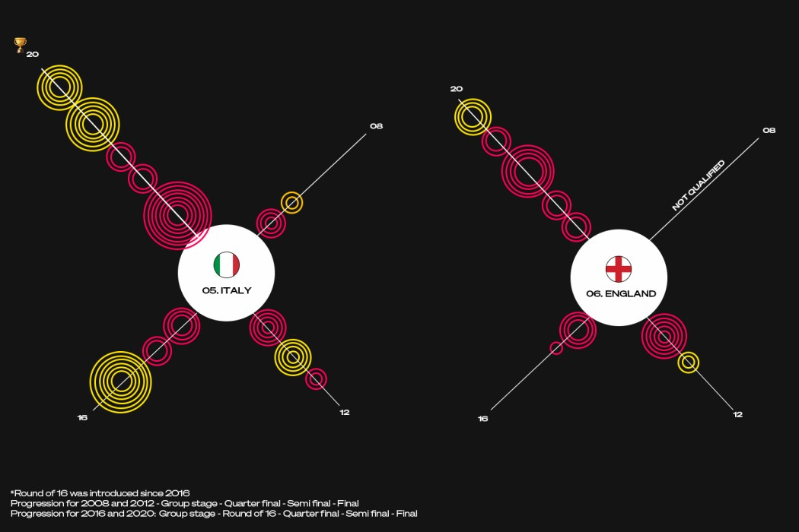

01Project Overview
This project visualises the performance of some of the top football teams in the UEFA European Championship from 2008 to 2020. Using concentric circles to represent goals scored at each stage, the design captures each team's tournament journey across four editions in one coherent visual language.
02Objectives
- Create an engaging, informative visual representation of UEFA EURO performance.
- Highlight each team's progression through stages of the competition.
- Showcase goal-scoring in a visually striking format.
03Tools & Technologies
- Design — Adobe Illustrator
- Data analysis — Microsoft Excel, Python
- Visualization — custom graphics & design elements
04Data Sources
- UEFA official statistics
- Historical match data — UEFA European Championships 2008, 2012, 2016, 2020
05Methodology
Data collection
Gathered goal-by-goal data from official UEFA sources and cleaned for accuracy and consistency.
Data analysis
- Segmentation — by year, team and stage (Group, R16, QF, SF, Final).
- Goal totals — calculated per team per stage.
Design
Developed the concept of concentric circles to represent goals scored at each stage. Built custom graphics in Illustrator and added annotations explaining tournament winners, penalty shootouts and progression.
06Visualization
Key features
- Concentric circles — each set represents an advancing stage; circle count = goals scored.
- Color coding — stages distinguished by colour; penalty shootouts highlighted in yellow.
- Annotations — clear callouts give context and explain visual elements.



Team highlights
- Portugal — consistent multi-stage scoring across editions.
- Spain — winning 2008 campaign & goal-scoring prowess.
- Germany & France — strong progression and reliable depth.
- Italy — victorious 2020 campaign with notable late-stage goals.
- England — full record including non-qualified stages.
07Results & Conclusion
The visualizations turn raw goal data into an engaging story about how top teams have progressed through Europe's marquee tournament. The project demonstrates how design and data can combine to produce sports analytics that are both insightful and visually arresting.